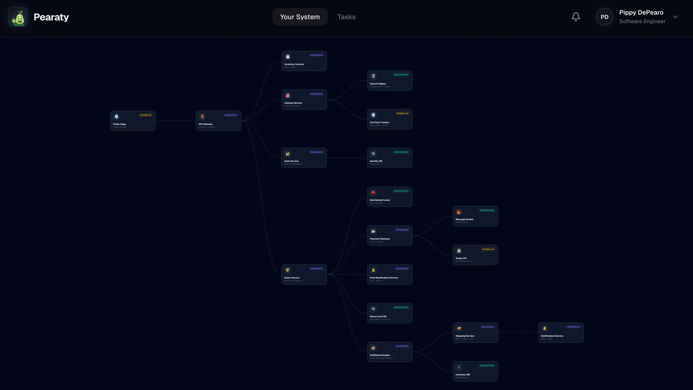
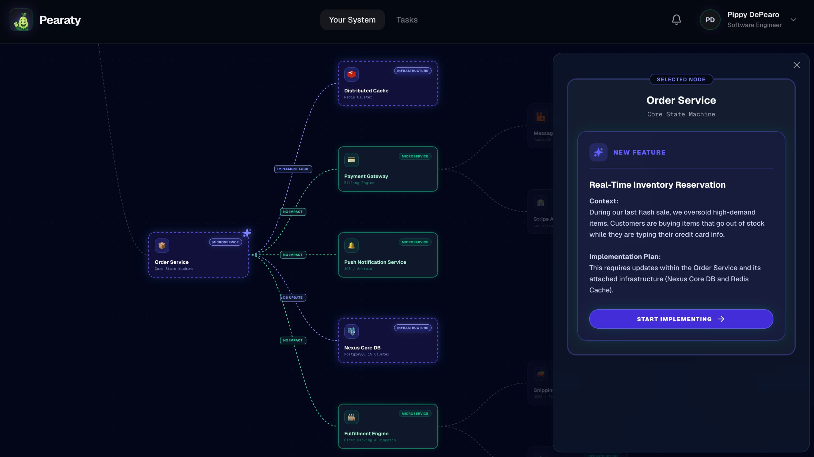

Bridge the gap between what you plan and what runs in production. Map architecture, pinpoint risks, and synthesize specs in real time.

Continuous architectural intelligence across your entire development lifecycle.
Stop guessing how services interact. Pearaty maps your active codebase automatically to give every developer the exact context of a lead architect.

Scale velocity without trading away architectural integrity or system visibility.
Empower new engineers to ship code safely on day one with a living, self-documenting map of your entire system topology.
Break down tribal silos by anchoring architectural truth into a unified platform accessible to product, security, and platform teams alike.
Shift security and compliance left by continuously validating architectural changes against live infrastructure policies before production impact.
Feed AI coding assistants and autonomous agents accurate, deterministic system context so they write reliable, architecture-aware code without hallucinating dependencies.
Get updates on Pearaty and news on our upcoming launch.